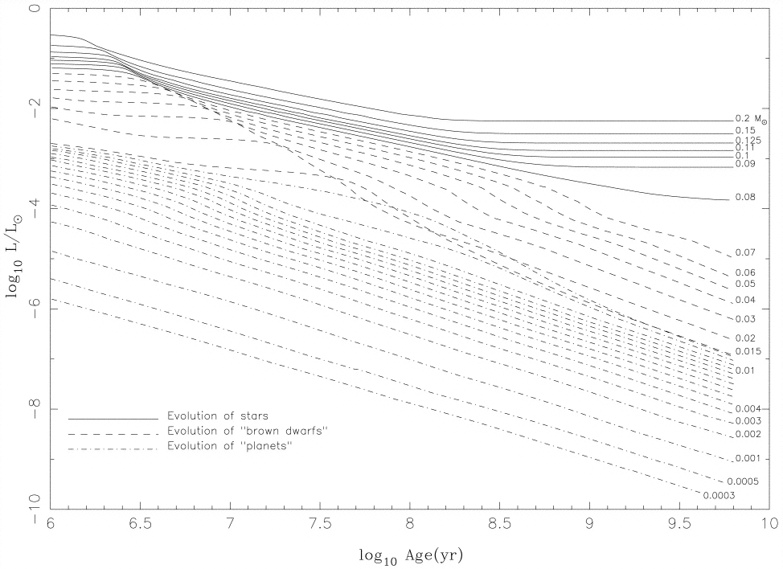
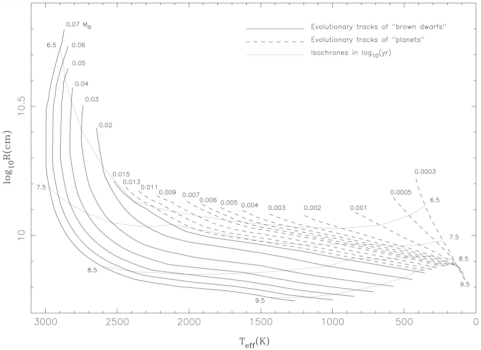
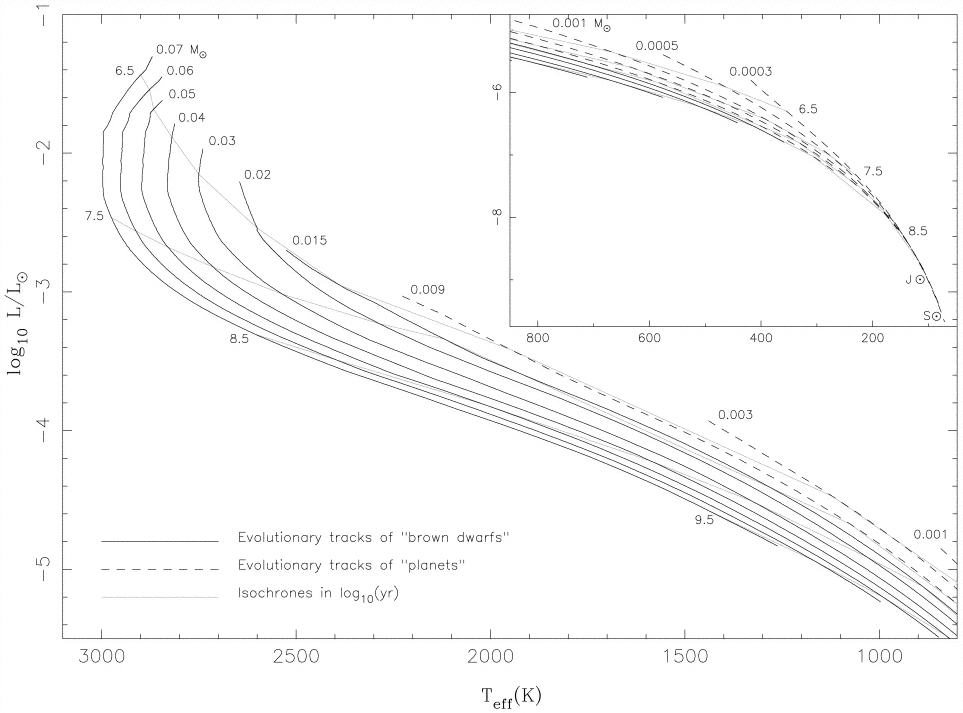
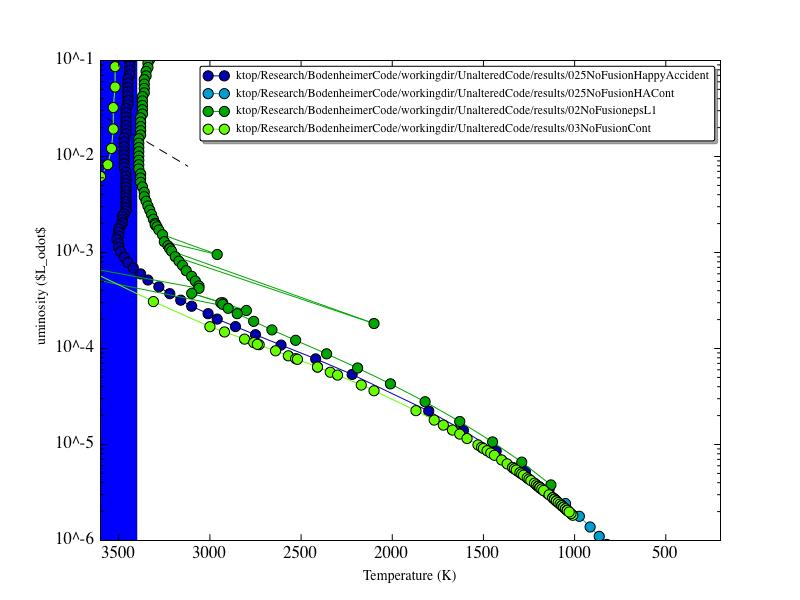
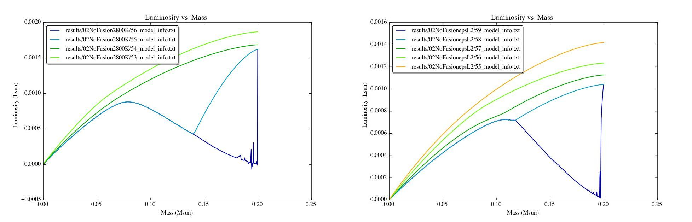
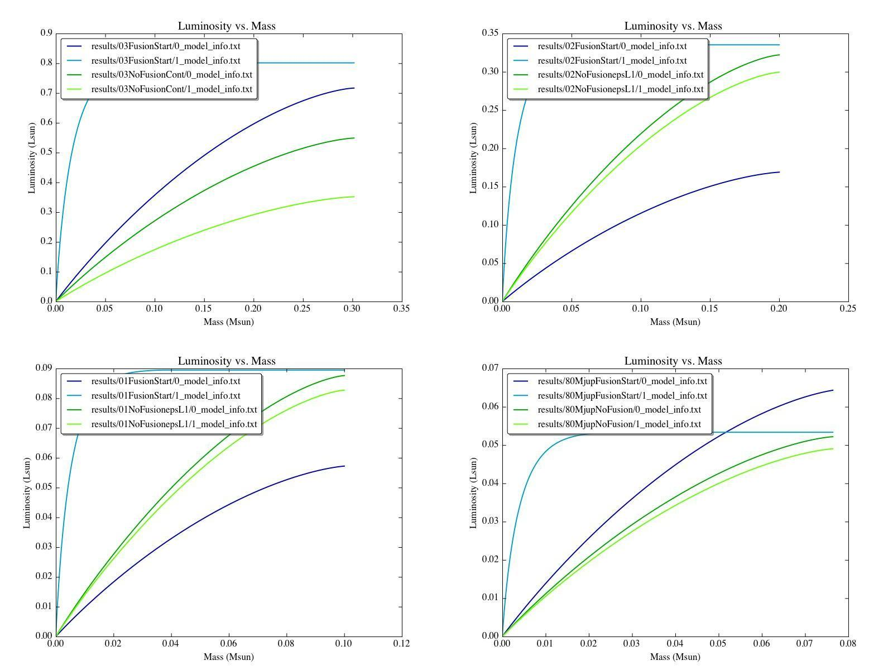

Date & Time: April 27, 2012
Location: Home
Computing context: Macho Mac: /Desktop/Research/BodenheimerCode/workingdir/UnalteredCode/
Today's paper:
Scripts/Software created today:
Useful computer stuff figured out today:
Continuing from last time:
It's important to remind myself that the reason for figuring out what's going on with this particular case is that I need to be confident that once I feed TheCode.f a jupiter-mass and -luminosity input model, it won't crash or go off the rails and produce a physically un-possible result. To that end, I should also make sure to run a 0.1Msun model through TheCode.f in more detail and see what's been causing that case to crash. Is it a luminosity lower-limit thing? Is it something to do with TheCode.f not being able to successfully invert a Henyey matrix containing a wide dynamic range of values? This is the heart of what I need to figure out, here.
Find a source/citation with the brown dwarf evolutionary track(s)
The following figures and data are taken from:
"A nongray theory of extrasolar giant planets and brown dwarfs"
Burrows, Marley, Hubbard, Lunine, Guillot, Saumon, Freedman, Sudarsky, Sharp
ApJ, 491: 856-875, 1997 December 20

Figure
1: From Burrows et al. 1997

Figure
5: Radius vs. surface temperature plot from Burrows et al 1997.
 Figure
2: My successful cooling results, compared to the Burrows et al.
1997 results for somewhat lower mass systems. Overall, it looks like
they agree well with each other.


Figure
4: A comparison of how the luminosity profiles of the two 0.2Msun
systems that fail to complete all 900 timesteps go off the rails.
The general progression is the same in both, though the overall
luminosity and the mass at which the profile inflection develops do
differ. Also, it looks like the 2800K case develops a negative
luminosity on the final profile (??!).
I think one of the following is causing the wonky luminosity profiles in Figure 4 to develop:
The luminosity is being allowed to change too much between iterations and/or models. It might be worth trying these runs again with more stringent SMAX (luminosity) constraints in place.
Something about the small Crad parameter is screwing up the luminosity
The outer temperature boundary conditions for the lower surface of the atmosphere are too high, causing the outer point of the internal luminosity profile to have to do this weird spiky thing...
I
need to plot the evolution of the atmospheric profiles for these
models as they're going off the rails, to get a better idea of
what's happening. Did it, and can't see anything unusual
or interesting going on in their atmospheres, though it's possible
that there is something wonky going on there that I'm failing to
recognize.
I'm starting to think that it's either a luminosity or surface temperature limit that's causing these simulations to crash, rather than a lower mass limit...
Take one of the 'with fusion' luminosity profiles from another converged model, scale it down to the 73Mjup case, and use that as part of the initial model for TheCode, rather than the n=3/2 polytrope model that's currently failing.
See Figure 7 (below) for a comparison of how the internal luminosity profiles vary from n=3/2 polytropic inputs --> after 1 timestep of fusion --> first two no-fusion steps
Will need to figure out the whole 'polyout' format... again. And then build something that conforms to it... again. (Ugh.)

Figure
7: To prepare for the 'just start the no-fusion runs with a
fusion-shaped luminosity profile' attempt, I've compared how the
magnitude and shape of the internal luminosity profiles for several
low-mass systems change throughout the polytrope --> with fusion
--> without fusion process. It looks like the profile shapes
always evolve in the same way. The change in overall luminosity from
the polytropic input model to the first with-fusion step does vary
from case to case, though. I'm not sure how much the no-fusion part
of the run depends on the *shape* of the luminosity profile, vs. how
strongly it depends on the *magnitude* of that profile.
To Do Today:
Science:
Read and take notes on a paper
Make sure to import it to your Mendeley database
Check the Vox Charta site for paper recommendations.
Think about how to start a mass chain-down within TheCode itself
Take a converged with-fusion model
025FusionStart = converged with-fusion model
Run it through a couple of no-fusion timesteps
025NoFusionHappyAccident, read in the second model on record, perhaps?
Name of this run: 025NFChainDownTest
Scale down its mass, run it through another few no-fusion evolutions, see if it manages to converge.
Did a chain of these, and got down to 0.98 Jupiter mass system. Still need to evolve that final model forward in time w/o fusion to see if/how it ever goes off the rails.
Results captured in:
MODEL: 731 TIME: 7.8621D+12 STORED AS RECORD 134 ON UNIT 3 (outputs/025NFChainDownTest.mod)
results/025NFChainDownTest/
[Start here next time parsing the results, and then continuing the evolution of the ~1Mj system if it looks physically reasonable)
Take one of the 'with fusion' luminosity profiles from another converged model, scale it down to the 73Mjup case, and use that as part of the initial model for TheCode, rather than the n=3/2 polytrope model that's currently failing.
See Figure 7 (from last time) for a comparison of how the internal luminosity profiles vary from n=3/2 polytropic inputs --> after 1 timestep of fusion --> first two no-fusion steps
Figure out the whole 'polyout' format... again. And then build something that conforms to it... again.
Figure out why all of my simulations (below a certain mass, at least) fail to converge once they start hitting that slight 'elbow' in their HR diagram evolution.
Look into adding the atmospheric calculations that are in TheCode.f here into my C++ code. Go over the section on the atmos. outer boundary conds. in the chapter from Peter's book. Note: you should have a scanned copy of that somewhere in one of your emails. Find it and download it onto this machine. (Can also annotate that pdf on this local machine, too...)
Computing Housekeeping & Miscellanea:
Download my own C++ code from the campus server
Create the proper directory structure for that on this machine
Test that my code will at least compile (and hopefully, also run) on this machine
Administrivia:
Collect the 'can you make it to my qual?' email responses, and use them to figure out when my qual should be
Fill out the purchase order form
Go on Amazon and get prices/quotes for the equipment I need:
Replacement laptop battery
A lock for the laptop
A 1-Terabyte external hard drive
Print out the Amazon listings I find for the equipments and staple it to the PO.
Upload my group meeting presentation and advisor meeting notes to the wordpress blog
Next steps: